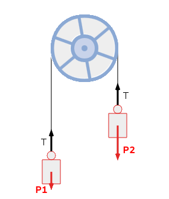
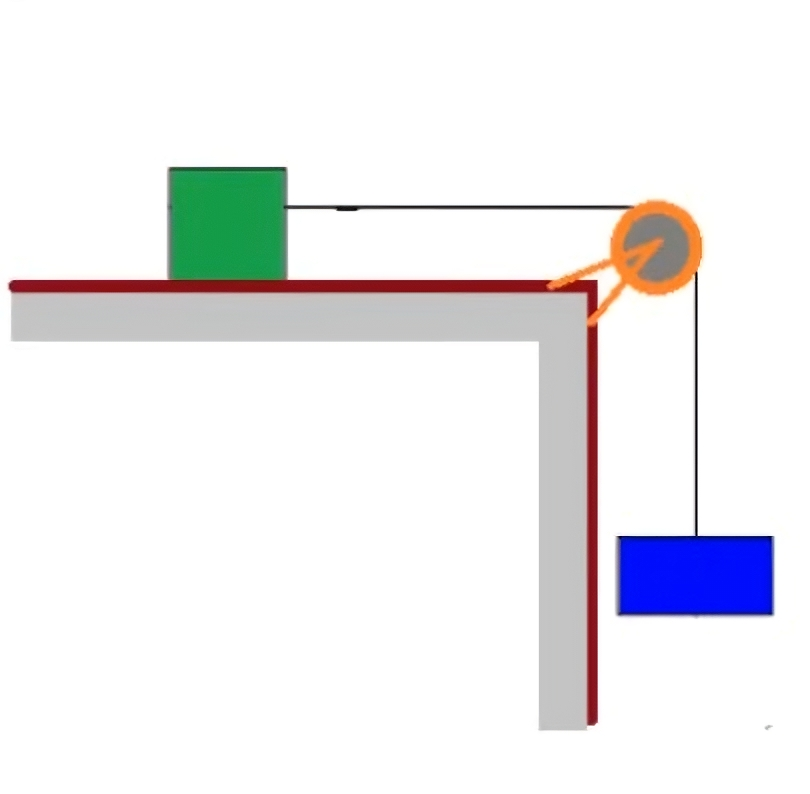
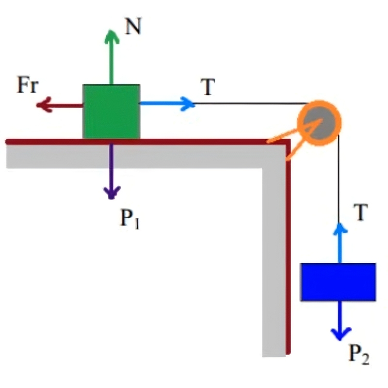
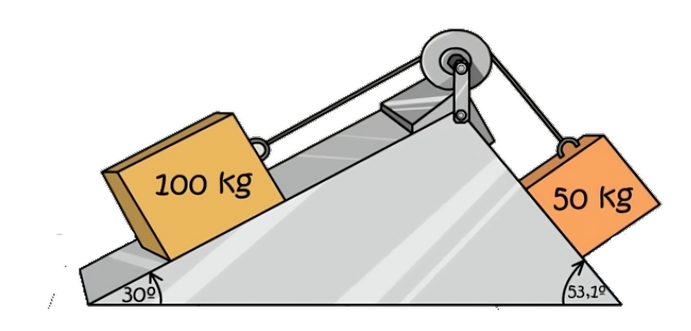
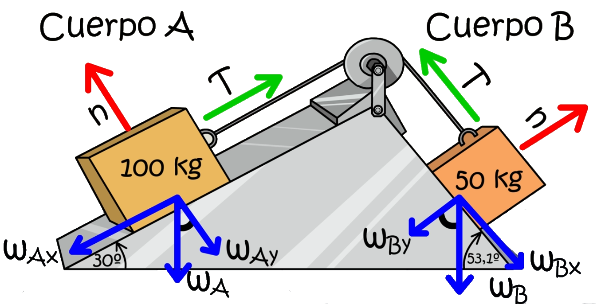
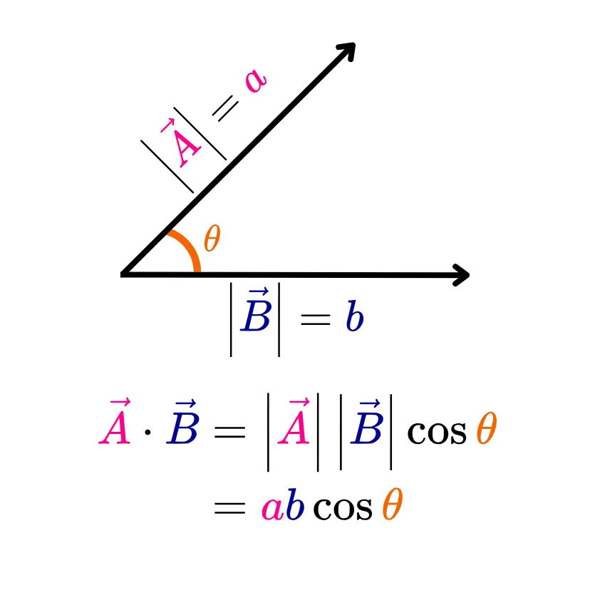
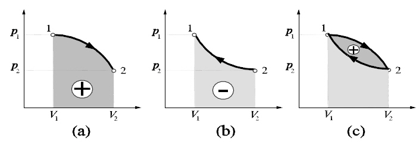
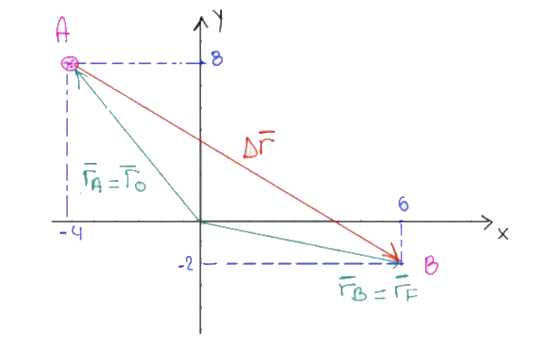
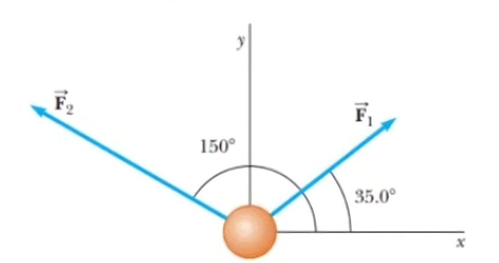

Masas en aceleración y trabajo
Maquina de Atwood
Se tienen 2 masas de 10 kg y 8 kg unidas por una cuerda que pasa por una polea. La polea es ideal y no tiene masa. ¿Cuál es la aceleración del sistema?¿Hacía que dirección se moverá cada masa?

Para resolver esto, modelemos las fuerzas en un diagrama de cuerpo libre. La masa 1 tiene una fuerza de gravedad hacia abajo y una tensión hacia arriba. La masa 2 tiene una fuerza de gravedad hacia abajo y una tensión hacia arriba. La aceleración del sistema es la misma para ambas masas.

Hacemos la sumatoria de fuerzas en la masa 1, en X no hay fuerzas, por lo que: \[ \sum F_x = 0 \] \[ \sum F_y = T - m_1 \cdot g = m_1 \cdot a \]
Para la masa 2 es lo mismo: \[ \sum F_x = 0 \] \[ \sum F_y = m_2 \cdot g - T = m_2 \cdot a \]
Ahora tenemos 2 ecuaciones con 2 incógnitas, la tensión y la aceleración. Despejamos la tensión de la primera ecuación (porque no nos preguntan por ella):
Primera masa
\[ T = m_1 \cdot g + m_1 \cdot a \] \[ T = m_1 \cdot (g + a) \]
Segunda masa
\[ T = m_2 \cdot g - m_2 \cdot a \] \[ T = m_2 \cdot (g - a) \]
Igualamos ambas tensiones: \[ m_1 \cdot (g + a) = m_2 \cdot (g - a) \] \[ m_1 \cdot g + m_1 \cdot a = m_2 \cdot g - m_2 \cdot a \] \[ m_1 \cdot g + m_2 \cdot a = m_2 \cdot g - m_1 \cdot a \] \[ (m_1 + m_2) \cdot a = m_2 \cdot g - m_1 \cdot g \] \[ a = \frac{(m_2 - m_1) \cdot g}{(m_1 + m_2)} \] \[ a = \frac{(8 \, \text{kg} - 10 \, \text{kg}) \cdot 9.81 \, \text{m/s}^2}{(10 \, \text{kg} + 8 \, \text{kg})} \]
\[ a = \frac{-19.62 \, \text{kg} \cdot \text{m/s}^2}{18 \, \text{kg}} \] \[ a = -1.09 \, \text{m/s}^2 \]
Ejercicio 1
Un cuerpo de 40 kg de masa descansa sobre una mesa. Mediante una cuerda que pasa por una polea, se une a otro de 30 kg que cuelga libremente. Calcula la aceleración de los cuerpos y la tensión de la cuerda suponiendo que el coeficiente de rozamiento para el primer cuerpo vale 0,2.

Diagrama de cuerpo libre

Fuerzas en la masa 1
\[ \sum F_x = T - f_r = m_1 \cdot a \] \[ \sum F_y = N - m_1 \cdot g = 0 \]
Fuerzas en la masa 2
\[ \sum F_x = 0 \] \[ \sum F_y = m_2 \cdot g - T = m_2 \cdot a \]
Nos piden la aceleración y la tensión. Despejamos la tensión de la primera ecuación: \[ T = m_1 \cdot a + f_r \] \[ T = m_1 \cdot a + \mu \cdot N \] Podemos definir la normal gracias a las fuerzas en Y: \[ N = m_1 \cdot g \] \[ T = m_1 \cdot a + \mu \cdot m_1 \cdot g \]
Reemplazamos la tensión en la suma de fuerzas en Y de la masa 2: \[ m_2 \cdot g - T = m_2 \cdot a \] \[ m_2 \cdot g - (m_1 \cdot a + \mu \cdot m_1 \cdot g) = m_2 \cdot a \]
\[ m_2 \cdot g - \mu \cdot m_1 \cdot g = m_2 \cdot a + m_1 \cdot a \] \[ m_2 \cdot g - \mu \cdot m_1 \cdot g = (m_2 + m_1) \cdot a \] \[ a = \frac{(m_2 - \mu \cdot m_1) \cdot g}{(m_1 + m_2)} \] Reemplazamos los valores: \[ a = \frac{(30 \, \text{kg} - 0.2 \cdot 40 \, \text{kg}) \cdot 9.81 \, \text{m/s}^2}{(40 \, \text{kg} + 30 \, \text{kg})} \] \[ a = \frac{(30 \, \text{kg} - 8 \, \text{kg}) \cdot 9.81 \, \text{m/s}^2}{70 \, \text{kg}} \] \[ a = 3.08 \, \text{m/s}^2 \]
Ya que tenemos la aceleración, podemos reemplazarla en la ecuación de la tensión: \[ T = m_1 \cdot a + \mu \cdot m_1 \cdot g \] \[ T = 40 \, \text{kg} \cdot 3.08 \, \text{m/s}^2 + 0.2 \cdot 40 \, \text{kg} \cdot 9.81 \, \text{m/s}^2 \] \[ T = 201.68 \, \text{N} \]
Ejercicio 2
Se tienen 2 bloques en planos inclinados de 30° y 53,2°. El bloque de 30° tiene una masa de 100 kg y el de 53,2° tiene una masa de 50 kg. Ambos bloques están unidos por una cuerda que pasa por una polea ideal. ¿Cuál es la aceleración del sistema y la tensión neta de la cuerda?

Diagrama de cuerpo libre

Fuerzas en la masa A
Descomponemos la fuerza peso en sus componentes \[ \sum F_x = T - m_A \cdot g \cdot \sin(\theta) = m_A \cdot a \] \[ \sum F_y = N - m_A \cdot g \cdot \cos(\theta) = 0 \]
Fuerzas en la masa B
\[ \sum F_x = m_B \cdot g \cdot \sin(\alpha) -T = m_B \cdot a \] \[ \sum F_y = N - m_B \cdot g \cdot \cos(\alpha) = 0 \]
Aca podemos hacer lo mismo que en el ejercicio anterior, despejamos la tensión de la primera ecuación: \[ T = m_A \cdot a + m_A \cdot g \cdot \sin(\theta) \] Reemplazamos la tensión en la segunda ecuación: \[ \sum F_x = m_B \cdot g \cdot \sin(\alpha) -T = m_B \cdot a \] \[ m_B \cdot g \cdot \sin(\alpha) - (m_A \cdot a + m_A \cdot g \cdot \sin(\theta)) = m_B \cdot a \] \[ m_B \cdot g \cdot \sin(\alpha) - m_A \cdot g \cdot \sin(\theta) = (m_B + m_A) \cdot a \] \[ a = \frac{(m_B \cdot g \cdot \sin(\alpha) - m_A \cdot g \cdot \sin(\theta))}{(m_B + m_A)} \]
Reemplazamos los valores: \[ a = \frac{(50 \, \text{kg} \cdot 9.81 \, \text{m/s}^2 \cdot \sin(53.2°) - 100 \, \text{kg} \cdot 9.81 \, \text{m/s}^2 \cdot \sin(30°))}{(50 \, \text{kg} + 100 \, \text{kg})} \] \[ a = \frac{(50 \, \text{kg} \cdot 9.81 \, \text{m/s}^2 \cdot 0.799 - 100 \, \text{kg} \cdot 9.81 \, \text{m/s}^2 \cdot 0.5)}{(50 \, \text{kg} + 100 \, \text{kg})} \] \[ a = \frac{(50 \, \text{kg} \cdot 7.99 - 100 \, \text{kg} \cdot 4.905)}{150 \, \text{kg}} \] \[ a = \frac{(399.5 - 490.5)}{150 \, \text{kg}} \] \[ a = \frac{-91}{150} \] \[ a = -0.607 \, \text{m/s}^2 \]
El resultado anterior se interpreta como que la masa A se mueve hacia abajo y la masa B hacia arriba. La aceleración es negativa porque la masa A es más pesada que la masa B.
Ahora que tenemos la aceleración, podemos reemplazarla en cualquier ecuación de la tensión: \[ T = m_A \cdot a + m_A \cdot g \cdot \sin(\theta) \] \[ T = 100 \, \text{kg} \cdot (-0.607 \, \text{m/s}^2) + 100 \, \text{kg} \cdot 9.81 \, \text{m/s}^2 \cdot \sin(30°) \] \[ T = -60.7 \, \text{N} + 100 \, \text{kg} \cdot 9.81 \, \text{m/s}^2 \cdot 0.5 \] \[ T = -60.7 \, \text{N} + 490.5 \, \text{N} \] \[ T = 429.8 \, \text{N} \]
Producto punto
El producto punto es una operación matemática que se realiza entre dos vectores. El resultado de esta operación es un número real. El producto punto se define como el producto de las magnitudes de los vectores y el coseno del ángulo entre ellos.

Trabajo
El trabajo es una magnitud física que mide la energía transferida a un objeto mediante una fuerza. El trabajo se define como el producto de la fuerza y la distancia recorrida en la dirección de la fuerza. El trabajo se mide en julios (J) y se define como: \[ W = F \cdot d \cdot \cos(\theta) \]

Ejercicio 3
Una partícula es trasladada de la posición \(-4\hat{\imath} +8 \hat{\jmath} \hspace{2mm} m\) a la posición \(6\hat{\imath}-2\hat{\jmath}\hspace{1mm}m\).
Mientras ello ocurre una fuerzaque actúa sobre ella \(F=(4î + 2ĵ)\hspace{1mm}N\). Determine la cantidad de trabajo de dicha fuerza.

Para resolver este problema, primero debemos encontrar el desplazamiento de la partícula. El desplazamiento se define como la diferencia entre la posición final y la posición inicial: \[ \Delta \vec{r} = \vec{r_f} - \vec{r_i} \] \[ \Delta \vec{r} = (6\hat{\imath}-2\hat{\jmath}) - (-4\hat{\imath} +8 \hat{\jmath}) \] \[ \Delta \vec{r} = (6 + 4)\hat{\imath} + (-2 - 8)\hat{\jmath} \] \[ \Delta \vec{r} = 10\hat{\imath} - 10\hat{\jmath} \]
Ahora que tenemos el desplazamiento, podemos calcular el trabajo realizado por la fuerza. El trabajo se define como el producto punto entre la fuerza y el desplazamiento: \[ W = \vec{F} \cdot \Delta \vec{r} \] \[ W = (4\hat{\imath} + 2\hat{\jmath}) \cdot (10\hat{\imath} - 10\hat{\jmath}) \] \[ W = (4 \cdot 10) + (2 \cdot -10) \] \[ W = 40 - 20 \] \[ W = 20 \, J \]
Ejercicio 4
Sobre una pelota se aplican las fuerzas \(F_1\) y \(F_2\) de 30N y 50N respectivamente.
¿Cuál es el trabajo total realizado?
\(\Delta \vec{r} = (-9i + 3j)m\)

Para resolver este problema, primero debemos encontrar el trabajo realizado por cada fuerza. O podríamos sumar las fuerzas y luego calcular el trabajo total.
Nos dan los vectores en cordenadas polares, por lo que debemos convertirlos a coordenadas cartesianas.
\[ F_1 = 30N \cdot (\cos(\theta) \hat{\imath} + \sin(\theta) \hat{\jmath}) \]
\[ F_1 = 30N \cdot (\cos(35°) \hat{\imath} + \sin(35°) \hat{\jmath}) \] \[ F_1 = 24.57 \hat{\imath} + 17.21 \hat{\jmath} \hspace{2mm} N \]
Ahora para el segundo vector: \[ F_2 = 50N \cdot (\cos(\alpha) \hat{\imath} + \sin(\alpha) \hat{\jmath}) \] \[ F_2 = 50N \cdot (\cos(150°) \hat{\imath} + \sin(150°) \hat{\jmath}) \] \[ F_2 = -43.30 \hat{\imath} + 25 \hat{\jmath} \hspace{2mm} N \]
Sumamos las fuerzas: \[ \vec{F} = F_1 + F_2 \] \[ \vec{F} = (24.57 \hat{\imath} + 17.21 \hat{\jmath}) + (-43.30 \hat{\imath} + 25 \hat{\jmath}) \] \[ \vec{F} = (-18.73 \hat{\imath} + 42.21 \hat{\jmath}) \hspace{2mm} N \]
El trabajo se define como el producto punto entre la fuerza y el desplazamiento: \[ W = \vec{F} \cdot \Delta \vec{r} \] \[ W = (-18.73 \hat{\imath} + 42.21 \hat{\jmath}) \cdot (-9\hat{\imath} + 3\hat{\jmath}) \] \[ W = (-18.73 \cdot -9) + (42.21 \cdot 3) \] \[ W = 168.57 + 126.63 \] \[ W = 295.2 \, J \]